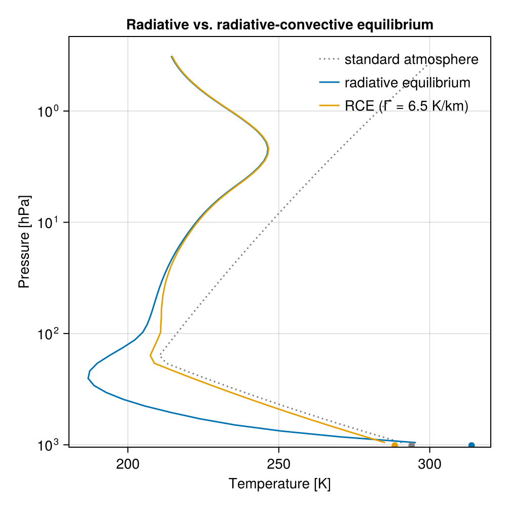
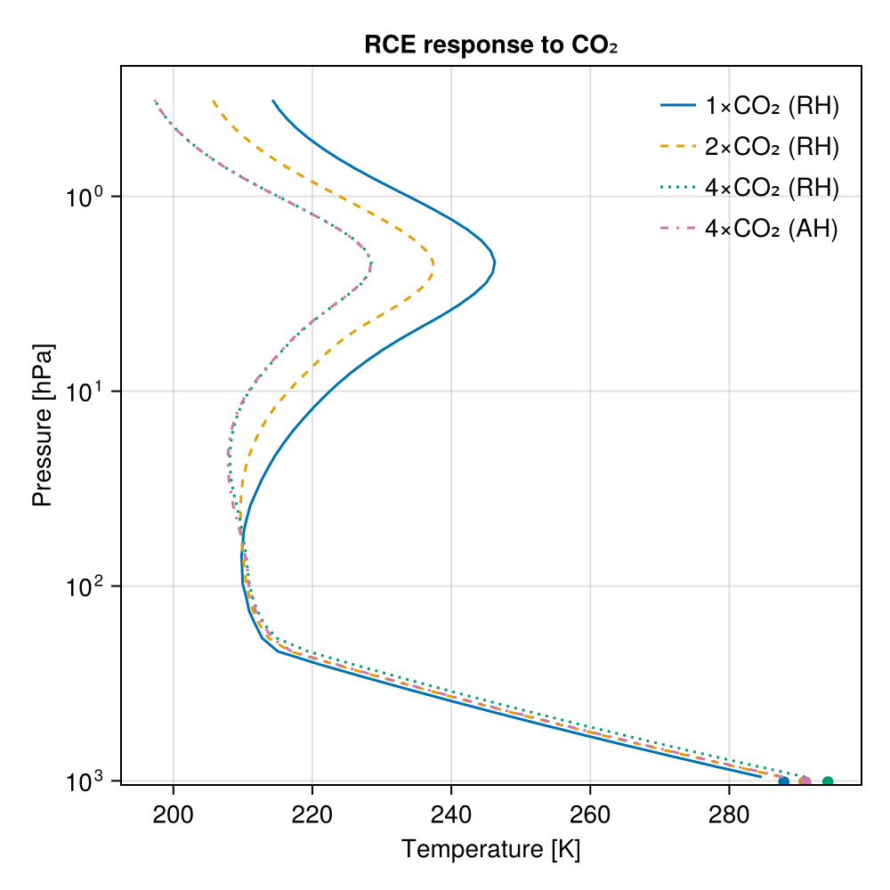
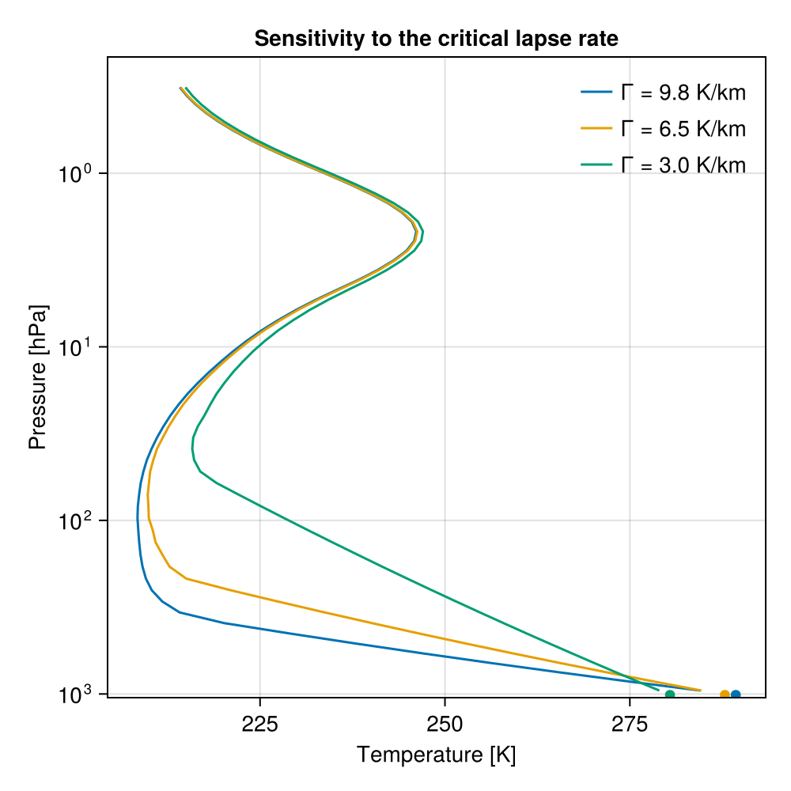
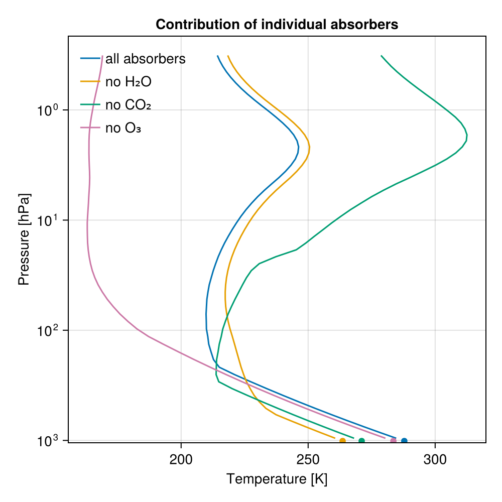

Radiative-convective equilibrium (Manabe's classic experiment)
This tutorial reproduces the classic radiative-convective equilibrium (RCE) calculations of Manabe and Strickler [6] and Manabe and Wetherald [7] with RRTMGP's clear-sky gas optics. It calculates RCE for a single atmospheric column with
- a prescribed tropospheric lapse rate (convective adjustment to 6.5 K/km),
- a prescribed relative-humidity profile (water vapor follows the temperature),
- a stratosphere in radiative equilibrium, and
- a surface temperature diagnosed from the energy balance: it is iterated until the net radiative flux at the top of the atmosphere vanishes.
Kluft et al. [8] used a similar setup with the single-column model konrad to revisit the calculations by Manabe and collaborators.
We reproduce four of Manabe's results: the radiative-versus-radiative-convective comparison, the surface warming under CO₂ increases with the water-vapor feedback (fixed relative rather than fixed absolute humidity), the dependence of the equilibrium on the assumed lapse rate, and the decomposition of the greenhouse effect into its individual absorbers (water vapor, CO₂, ozone).
Along the way, this tutorial demonstrates the host-model workflow of RRTMGP.jl: build a solver, then mutate its state via the getter contract and call update_fluxes! inside a time loop.
using RRTMGP
using NCDatasets # activates RRTMGP's lookup-table extension
import Thermodynamics as TD
import ClimaParams # brings in the CliMA default thermodynamic constants
using CairoMakieThe column
Start from the idealized midlatitude-summer standard atmosphere on 60 layers up to 60 km. Its pressure grid, ozone profile, and well-mixed gases (CO₂ = 420 ppmv, etc.) stay fixed; the temperature, and, in most experiments, the water vapor, are overwritten by the RCE iteration. We keep a copy of the standard-atmosphere temperature to overlay later as a reference.
Every column in this tutorial is built with the same settings, so we collect them once:
const FT = Float64
const column = (; kind = :midlatitude_summer, nlay = 60, z_top = 60.0e3)
profile = RRTMGP.standard_atmosphere(FT; column...);
T_obs = copy(profile.t_lay[:, 1]);Like Manabe and collaborators, we force the column with the global-mean insolation $S_0/4 \approx 341$ W/m². The incident flux and the zenith angle have to be chosen together, since the zenith angle sets the path length available for shortwave absorption [9]. Like Kluft et al. [8], we take a zenith angle of 47.9° ($\cos θ \approx 0.67$); an incident flux of 509 W/m² then delivers $509 \times \cos(47.9^\circ) \approx 341$ W/m² at the top of the atmosphere. The surface albedo of 0.3 stands in for the shortwave reflection of the clouds, which this clear-sky column omits:
insolation = (; cos_zenith = cosd(47.9), toa_flux = 509.0, surface_albedo = 0.3);Both RRTMGP and Thermodynamics.jl read their physical constants from ClimaParams.jl, so the constants used across the radiation and thermodynamics calculations here are consistent. We build both parameter sets from it and take the gravitational acceleration, the dry-air gas constant, and the dry-air heat capacity from them:
params = RRTMGP.Parameters.RRTMGPParameters(FT)
td_params = TD.Parameters.ThermodynamicsParameters(FT)
R_d = TD.Parameters.R_d(td_params)
cp_d = TD.Parameters.cp_d(td_params)
g = RRTMGP.Parameters.grav(params) # gravitational acceleration [m/s²]9.81RRTMGP needs temperatures both at the layer centers, where the optical properties are evaluated, and at the level (cell-face) boundaries, where the longwave source varies. A driver has to decide which of the two it marches. We march the levels and set each layer to the mean of the two levels bounding it, so interpolation = NoInterpolation() leaves the level values as the iteration writes them. Marching the layers instead, with levels reconstructed by interpolation, admits a computational mode: a grid-scale oscillation of the layer temperatures leaves the interpolated levels unchanged, so the radiation cannot damp it.
We also add an isothermal boundary layer at the top. A column that stops at 60 km receives no downward longwave flux at its top face: the topmost layer emits through both faces but absorbs only through one, so it cools at tens of kelvin per day. This truncation artifact can spread a sawtooth temperature pattern of several kelvin amplitude through the layers below. isothermal_boundary_layer = true extends the column with one isothermal layer reaching the lookup tables' minimum pressure, which supplies the missing downward flux.
We collect this setup, the parameters, and the insolation into one shared configuration. One call then builds the clear-sky solver (downloading the RRTMGP lookup tables on first use) and solves the initial state; its state is exposed as writable views, which the iteration overwrites in place:
setup = (;
params,
insolation...,
interpolation = RRTMGP.NoInterpolation(),
isothermal_boundary_layer = true,
)
out = RRTMGP.solve(profile; setup...)
solver = out.solver;Fixed relative humidity
Manabe and Wetherald prescribed the relative-humidity profile $h(p) = 0.77\,(p/p_s - 0.02)/(1 - 0.02)$, so the specific humidity rises and falls with the temperature (the water-vapor feedback in its simplest form). The saturation vapor pressure $e^*(T)$ comes from Thermodynamics.jl, which integrates the Clausius-Clapeyron relation under the Rankine-Kirchhoff (constant heat capacity) approximation [10] used throughout the CliMA model stack. From the vapor partial pressure $e = h\,e^*$, the water-vapor volume mixing ratio (moles of vapor per mole of dry air, RRTMGP's convention) is $e/(p - e)$. We floor it at the stratospheric minimum Manabe used (a vmr of ≈ 4.8 × 10⁻⁶).
e_sat(T) = TD.saturation_vapor_pressure(td_params, T, TD.Liquid()) # [Pa]
rel_hum(p, p_sfc) = max(0.77 * (p / p_sfc - 0.02) / (1 - 0.02), 0.0)
const vmr_h2o_min = 4.8e-6
function set_humidity!(solver)
T = RRTMGP.layer_temperature(solver)
p = RRTMGP.layer_pressure(solver)
vmr = RRTMGP.volume_mixing_ratio(solver, "h2o")
p_sfc = RRTMGP.level_pressure(solver)[1, 1]
e = rel_hum.(p, p_sfc) .* e_sat.(T) # vapor partial pressure [Pa]
@. vmr = max(e / (p - e), vmr_h2o_min)
# Alternatively, Thermodynamics.jl can do both steps in one go:
# q = TD.q_vap_from_RH.(td_params, p, T, rel_hum.(p, p_sfc), Ref(TD.Liquid()))
# @. vmr = max(TD.vol_vapor_mixing_ratio(td_params, q), vmr_h2o_min)
return nothing
end;Convective adjustment
The steepest lapse rate a dry column sustains is the dry adiabatic value $Γ_d = g/c_p$, calculated from the Thermodynamics.jl constants:
Γ_dry = g / cp_d
println("Dry adiabatic lapse rate g/cₚ = $(round(1000 * Γ_dry; digits = 1)) K/km")Dry adiabatic lapse rate g/cₚ = 9.8 K/kmMoist convection and large-scale eddies hold the observed tropospheric lapse rate to a smaller value. Like Manabe and collaborators, we impose a critical lapse rate of 6.5 K/km, which is close to the observed tropospheric mean. Wherever radiative cooling pulls the lapse rate above this value, convection is assumed to instantaneously restore the critical profile $T(z) = T_s - Γ z$, anchored at a trial surface temperature $T_s$. The lapse rate is defined as a derivative with respect to height, yet no altitudes are needed to apply it: combining $dT/dz = -Γ$ with hydrostatic balance and the ideal-gas law gives $dT/T = (Γ R_d / g)\, dp/p$, so in the solver's native pressure coordinate, the critical profile is the power law
\[T_c(p) = T_s \left(\frac{p}{p_s}\right)^{Γ R_d / g},\]
which reduces to the dry adiabat $T \propto p^{R_d/c_p}$ for $Γ = g/c_p$. Levels warmer than $T_c$ (the stratosphere) are left untouched, so the tropopause emerges from the calculation.
The convective adjustment warms the levels colder than $T_c$ and leaves the surface at the trial $T_s$, so it adds energy to the column. To reach equilibrium, the surface temperature is iteratively adjusted until the net radiative flux at the top of the atmosphere vanishes. Each equilibration below computes the radiative-convective state of a column at a trial $T_s$, and the next section varies that trial value until the budget closes and equilibrium is reached.
const Γ_crit = 6.5e-3 # critical lapse rate [K/m]
function convective_adjustment!(solver, T_sfc; Γ = Γ_crit)
T = RRTMGP.level_temperature(solver)
p = RRTMGP.level_pressure(solver)
p_sfc = p[1, 1]
@. T = max(T, T_sfc * (p / p_sfc)^(Γ * R_d / g)) # critical profile T_c(p)
return nothing
end;Compute radiative-convective state at a trial surface temperature
Each step applies the convective adjustment, fills the layer temperatures from the levels, updates the water vapor to the fixed relative humidity, solves the radiative transfer, and marches the level temperatures with the radiative heating rate. The heating rate is a layer quantity, so each interior level is advanced with the mean of the heating rates of the two layers meeting at it, and the bottom and top levels with the single adjacent layer's.
The ground temperature enters separately, through the surface-emission boundary condition (surface_temperature); keeping the two distinct lets the air at the bottom face be colder than the ground, as radiative equilibrium requires. Where convection is active, the adjustment ties the bottom face to the ground temperature, the limit of strong turbulent heat exchange at the surface.
The column has settled when successive adjusted profiles stop changing. That is the equilibrium state, in which radiative cooling in the convecting troposphere balances convective heating.
One iteration serves every experiment: convection = false gives pure radiative equilibrium, humidity = false holds the water vapor constant (used below to remove water vapor, and to prescribe an absolute humidity distribution), and the Γ keyword changes the critical lapse rate. The adjustment and humidity are synced before each solve, including on the final step, so the reported fluxes match the temperatures.
function equilibrate!(
solver,
T_sfc;
convection = true,
humidity = true,
Γ = Γ_crit,
dt = 8 * 3600.0,
maxsteps = 20000,
tol = 1e-4,
)
RRTMGP.surface_temperature(solver) .= T_sfc
T_lev = RRTMGP.level_temperature(solver)
T_lay = RRTMGP.layer_temperature(solver)
nlev = size(T_lev, 1)
nlay = nlev - 1
T_prev = fill!(similar(T_lev), 0)
dT = similar(Array(T_lev))
for _ in 1:maxsteps
convection && convective_adjustment!(solver, T_sfc; Γ)
@views @. T_lay = (T_lev[1:nlay, :] + T_lev[2:nlev, :]) / 2
humidity && set_humidity!(solver)
RRTMGP.update_fluxes!(solver)
maximum(abs, T_lev .- T_prev) < tol && break
T_prev .= T_lev
Q = Array(RRTMGP.heating_rate(solver))
@views @. dT[2:nlay, :] = (Q[1:(nlay - 1), :] + Q[2:nlay, :]) / 2
@views dT[1, :] .= Q[1, :]
@views dT[nlev, :] .= Q[nlay, :]
T_lev .+= clamp.(dt .* dT, -2, 2)
end
return nothing
end;Closing the energy balance
The net flux at the top of the atmosphere (net = up - down) measures the column's energy imbalance, and it vanishes at the equilibrium surface temperature. A secant iteration on that imbalance finds it in a handful of steps, each restarting from the previous state:
toa_imbalance(solver) = RRTMGP.net_flux(solver)[end, 1]
function balanced_surface_temperature!(
solver,
T1,
T2;
convection = true,
humidity = true,
Γ = Γ_crit,
tol = 5e-3,
)
eq(T) = (equilibrate!(solver, T; convection, humidity, Γ); toa_imbalance(solver))
N1 = eq(T1)
N2 = eq(T2)
while abs(N2) > tol && abs(T2 - T1) > 1e-3
Tn = T2 - N2 * (T2 - T1) / (N2 - N1)
T1, N1 = T2, N2
T2 = Tn
N2 = eq(T2)
end
return T2
endbalanced_surface_temperature! (generic function with 1 method)We start from two guesses for the surface temperature to obtain the radiative-convective equilibrium at present-day CO₂:
Ts_1x = balanced_surface_temperature!(solver, FT(285), FT(290))
T_1x = copy(Array(RRTMGP.layer_temperature(solver)))
T_lev_1x = copy(Array(RRTMGP.level_temperature(solver))) # for warm starts
p_lay = copy(Array(RRTMGP.layer_pressure(solver)))
vmr_1x = copy(Array(RRTMGP.volume_mixing_ratio(solver, "h2o"))) # reference vapor
println("Equilibrium Tₛ (1 × CO₂): $(round(Ts_1x; digits = 2)) K")Equilibrium Tₛ (1 × CO₂): 287.85 KClosing the budget at the top of the atmosphere leaves a residual radiative flux into the ground. That residual is the sensible and latent heat flux that is implicit in the RCE calculation.
sfc_convective_flux(solver) = -RRTMGP.net_flux(solver)[1, 1]
println("Implied surface convective flux: $(round(sfc_convective_flux(solver); digits = 1)) W/m²")Implied surface convective flux: 93.1 W/m²The figures below mark a column's ground temperature with a dot at the surface pressure, in the color of that column's curve. The center of the lowest layer lies above the surface, so the horizontal offset between a dot and the bottom of its curve is the temperature difference between the ground and the air above it.
p_sfc_hPa = Array(RRTMGP.level_pressure(solver))[1, 1] / 100
mark_ground!(ax, curve, T_sfc) = scatter!(ax, [T_sfc], [p_sfc_hPa]; color = curve.color, markersize = 9)mark_ground! (generic function with 1 method)Radiative equilibrium versus radiative-convective equilibrium
Dropping the convective adjustment and re-balancing the column reproduces Manabe and Strickler's pure radiative equilibrium baseline. That calculation predates the fixed-relative-humidity assumption and prescribed a distribution of absolute humidity instead. We do the same, leaving the standard atmosphere's water vapor untouched (humidity = false) in both columns, so that they differ only in whether convection acts.
function balanced_prescribed_humidity(; convection)
slv = RRTMGP.solve(profile; lookups = solver.lookups, setup...).solver
Ts = balanced_surface_temperature!(slv, FT(285), FT(300); convection, humidity = false)
return Ts, copy(Array(RRTMGP.layer_temperature(slv))), slv
end
Ts_rc, T_rc, _ = balanced_prescribed_humidity(; convection = true)
Ts_re, T_re, solver_re = balanced_prescribed_humidity(; convection = false)
println("Equilibrium Tₛ (radiative-convective): $(round(Ts_rc; digits = 1)) K")
println("Equilibrium Tₛ (radiative): $(round(Ts_re; digits = 1)) K")
T_bot_re = Array(RRTMGP.level_temperature(solver_re))[1, 1]
println("Bottom-face air temperature (radiative): $(round(T_bot_re; digits = 1)) K")
println("Implied surface convective flux (radiative): $(round(sfc_convective_flux(solver_re); digits = 2)) W/m²")Equilibrium Tₛ (radiative-convective): 288.4 K
Equilibrium Tₛ (radiative): 313.9 K
Bottom-face air temperature (radiative): 308.9 K
Implied surface convective flux (radiative): -0.02 W/m²Radiative equilibrium without convection leads to a surface 25 K warmer, with a profile that departs from the observed atmosphere (here, the idealized midlatitude-summer standard atmosphere we started from) at every height: the temperature decreases from the surface upward at two to three times the dry adiabatic lapse rate, runs 44 K below the standard atmosphere through the middle and upper troposphere, and forms no tropopause. The air at the bottom face is several kelvin colder than the ground beneath it, the surface discontinuity of radiative equilibrium. This radiative equilibrium state is unstable to convection, and the turbulent heat fluxes that the convective adjustment stands in for erase it.
The implied surface convective flux of the radiative column checks the bookkeeping: without convection, the net radiative flux is the same at every level, so closing the budget at the top of the atmosphere closes it at the surface too, leaving no energy flux for convection to carry.
fig = Figure(size = (500, 500))
ax = Axis(
fig[1, 1];
xlabel = "Temperature [K]",
ylabel = "Pressure [hPa]",
yscale = log10,
yreversed = true,
limits = (nothing, nothing, nothing, 1050),
title = "Radiative vs. radiative-convective equilibrium",
)
obs = lines!(ax, T_obs, p_lay[:, 1] ./ 100; color = :gray, linestyle = :dot, label = "standard atmosphere")
re = lines!(ax, T_re[:, 1], p_lay[:, 1] ./ 100; label = "radiative equilibrium")
rc = lines!(ax, T_rc[:, 1], p_lay[:, 1] ./ 100; label = "RCE (Γ = 6.5 K/km)")
mark_ground!(ax, obs, profile.t_sfc[1])
mark_ground!(ax, re, Ts_re)
mark_ground!(ax, rc, Ts_rc)
axislegend(ax; position = :rt, framevisible = false, backgroundcolor = :white)
fig
Climate sensitivity at fixed relative humidity
Manabe and Wetherald's central experiment was to re-balance the column for increased CO₂, keeping the relative humidity fixed, and compare the balanced surface temperature against the reference state above. The difference for doubled CO₂ is the equilibrium climate sensitivity of the radiative-convective column.
The reference tropopause, the highest layer on the convective profile, lies just above 11 km. On that profile, height and temperature are interchangeable, $z = (T_s - T)/Γ$, so the height follows from the temperature of the highest adjusted layer, again with no altitude reconstruction:
function tropopause_height(solver, T_sfc; Γ = Γ_crit)
T = Array(RRTMGP.layer_temperature(solver))[:, 1]
p = Array(RRTMGP.layer_pressure(solver))[:, 1]
p_sfc = Array(RRTMGP.level_pressure(solver))[1, 1]
k = findlast(abs.(T .- T_sfc .* (p ./ p_sfc) .^ (Γ * R_d / g)) .< 0.5)
return (T_sfc - T[k]) / Γ
end
println("Tropopause height ≈ $(round(tropopause_height(solver, Ts_1x) / 1000; digits = 1)) km")Tropopause height ≈ 11.2 kmNow scale the CO₂ and re-balance. balanced_co2 builds a fresh column with a scaled CO₂ concentration, starts it from the 1 × CO₂ equilibrium, and finds its balanced surface temperature. With fixed_rh = false, the water vapor is frozen at its reference (1 × CO₂) values (fixed absolute humidity) which removes the water-vapor feedback and isolates the direct effect of CO₂.
co2_1x = profile.well_mixed_vmr["co2"]
function balanced_co2(factor; fixed_rh = true, bracket = (Ts_1x, Ts_1x + 3))
prof = RRTMGP.standard_atmosphere(FT; column...)
prof.well_mixed_vmr["co2"] = factor * co2_1x
slv = RRTMGP.solve(prof; lookups = solver.lookups, setup...).solver
RRTMGP.level_temperature(slv) .= T_lev_1x # warm start
fixed_rh || (RRTMGP.volume_mixing_ratio(slv, "h2o") .= vmr_1x) # freeze reference vapor
Ts = balanced_surface_temperature!(slv, bracket...; humidity = fixed_rh)
return Ts, copy(Array(RRTMGP.layer_temperature(slv)))
end
Ts_2x_rh, T_2x_rh = balanced_co2(2)
Ts_4x_rh, T_4x_rh = balanced_co2(4; bracket = (Ts_1x + 3, Ts_1x + 7))
Ts_2x_ah, T_2x_ah = balanced_co2(2; fixed_rh = false, bracket = (Ts_1x, Ts_1x + 2))
Ts_4x_ah, T_4x_ah = balanced_co2(4; fixed_rh = false, bracket = (Ts_1x + 1, Ts_1x + 4));Collect the surface temperatures into a table. Comparing the fixed-RH and fixed-AH warming at the same forcing isolates the water-vapor feedback:
rows = (
("reference (1×CO₂, RH)", Ts_1x, nothing),
("2×CO₂, fixed RH", Ts_2x_rh, Ts_2x_rh - Ts_1x),
("4×CO₂, fixed RH", Ts_4x_rh, Ts_4x_rh - Ts_1x),
("2×CO₂, fixed AH", Ts_2x_ah, Ts_2x_ah - Ts_1x),
("4×CO₂, fixed AH", Ts_4x_ah, Ts_4x_ah - Ts_1x),
)
println(rpad("Experiment", 24), lpad("Tₛ [K]", 9), lpad("ΔTₛ [K]", 10))
for (name, Ts, dT) in rows
dstr = dT === nothing ? "—" : string(round(dT; digits = 1))
println(rpad(name, 24), lpad(round(Ts; digits = 1), 9), lpad(dstr, 10))
endExperiment Tₛ [K] ΔTₛ [K]
reference (1×CO₂, RH) 287.9 —
2×CO₂, fixed RH 290.7 2.9
4×CO₂, fixed RH 294.2 6.3
2×CO₂, fixed AH 289.3 1.5
4×CO₂, fixed AH 291.0 3.1For comparison, for the same configuration with clear skies, fixed relative humidity, and a hard adjustment to a constant 6.5 K/km lapse rate, Kluft et al. [8] found an equilibrium climate sensitivity of 2.65 K for konrad and Manabe and Wetherald [7] found 2.92 K. The 2.9 K here is close to the Manabe and Wetherald result. Holding the water vapor fixed halves the warming, so the water-vapor feedback doubles the response; the same two studies give 1.34 K and 1.36 K for the fixed-absolute-humidity case, below the 1.5 K here. The warming is close to logarithmic in CO₂; each doubling warms slightly more than the last, as the forcing per doubling grows [8] and the warmer column holds more water vapor. The spread among published values traces to the humidity profile, the adjustment scheme, and the ozone treatment, each of which you can vary by editing a few lines above.
The warmed column carries the fingerprint of CO₂-driven change: tropospheric warming with stratospheric cooling, predicted decades before it was observed. Fixed absolute humidity gives the same pattern with a weaker surface warming.
fig2 = Figure(size = (500, 500))
ax2 = Axis(
fig2[1, 1];
xlabel = "Temperature [K]",
ylabel = "Pressure [hPa]",
yscale = log10,
yreversed = true,
limits = (nothing, nothing, nothing, 1050),
title = "RCE response to CO₂",
)
for (T, Ts, style, label) in (
(T_1x, Ts_1x, nothing, "1×CO₂ (RH)"),
(T_2x_rh, Ts_2x_rh, :dash, "2×CO₂ (RH)"),
(T_4x_rh, Ts_4x_rh, :dot, "4×CO₂ (RH)"),
(T_4x_ah, Ts_4x_ah, :dashdot, "4×CO₂ (AH)"),
)
curve = lines!(ax2, T[:, 1], p_lay[:, 1] ./ 100; linestyle = style, label)
mark_ground!(ax2, curve, Ts)
end
axislegend(ax2; position = :rt, framevisible = false, backgroundcolor = :white)
fig2
Sensitivity to the critical lapse rate
The assumed critical lapse rate $Γ_c$ shapes the equilibrium. Re-balancing the reference column for lapse rates between 3.0 K/km and the dry adiabat (9.8 K/km) shows that a shallower lapse rate cools the surface but lifts the tropopause: the troposphere stretches vertically, because the gentler gradient needs more depth to bridge the surface and stratospheric temperatures. Each column is balanced, so each emits to space the sunlight it absorbs; the three absorb within about 1 W/m² of each other, so they settle on nearly the same outgoing longwave flux from temperature profiles whose surface temperatures span 9 K.
fig3 = Figure(size = (500, 500))
ax3 = Axis(
fig3[1, 1];
xlabel = "Temperature [K]",
ylabel = "Pressure [hPa]",
yscale = log10,
yreversed = true,
limits = (nothing, nothing, nothing, 1050),
title = "Sensitivity to the critical lapse rate",
)
for Γ_km in (9.8, 6.5, 3.0)
prof = RRTMGP.standard_atmosphere(FT; column...)
slv = RRTMGP.solve(prof; lookups = solver.lookups, setup...).solver
Ts = balanced_surface_temperature!(slv, FT(270), FT(292); Γ = Γ_km * 1e-3)
z_top = tropopause_height(slv, Ts; Γ = Γ_km * 1e-3) / 1000
olr = Array(RRTMGP.lw_flux_up(slv))[end, 1]
println(
"Γ = $(Γ_km) K/km: Tₛ = $(round(Ts; digits = 1)) K, ",
"tropopause ≈ $(round(z_top; digits = 1)) km, OLR = $(round(olr; digits = 1)) W/m²",
)
T = Array(RRTMGP.layer_temperature(slv))
curve = lines!(ax3, T[:, 1], p_lay[:, 1] ./ 100; label = "Γ = $(Γ_km) K/km")
mark_ground!(ax3, curve, Ts)
end
axislegend(ax3; position = :rt, framevisible = false, backgroundcolor = :white)
fig3
Contributions of the individual absorbers
The absorber decomposition of Manabe and Strickler [6] isolates each greenhouse gas. We remove water vapor, carbon dioxide, or ozone one at a time, find the column's balanced surface temperature, and compare against the reference (all-absorbers) profile computed above. Water vapor is removed by zeroing it and holding it there (humidity = false); ozone by zeroing its layer profile; CO₂ by setting its well-mixed value to zero before the state is built.
function rce_without(absorber, T1, T2)
prof = RRTMGP.standard_atmosphere(FT; column...)
absorber === :co2 && (prof.well_mixed_vmr["co2"] = 0.0)
slv = RRTMGP.solve(prof; lookups = solver.lookups, setup...).solver
absorber === :o3 && (RRTMGP.volume_mixing_ratio(slv, "o3") .= 0)
absorber === :h2o && (RRTMGP.volume_mixing_ratio(slv, "h2o") .= 0)
Ts = balanced_surface_temperature!(slv, T1, T2; humidity = absorber !== :h2o)
return Ts, copy(Array(RRTMGP.layer_temperature(slv)))
end
# Brackets straddle each case's expected surface temperature; the secant
# method converges from either side
Ts_no_h2o, T_no_h2o = rce_without(:h2o, FT(255), FT(272))
Ts_no_co2, T_no_co2 = rce_without(:co2, FT(264), FT(278))
Ts_no_o3, T_no_o3 = rce_without(:o3, FT(278), FT(288))
for (name, Ts) in (
("all absorbers", Ts_1x),
("no H₂O", Ts_no_h2o),
("no CO₂", Ts_no_co2),
("no O₃", Ts_no_o3),
)
println("Equilibrium Tₛ ($name): $(round(Ts; digits = 1)) K")
endEquilibrium Tₛ (all absorbers): 287.9 K
Equilibrium Tₛ (no H₂O): 263.6 K
Equilibrium Tₛ (no CO₂): 271.1 K
Equilibrium Tₛ (no O₃): 283.6 KThe decomposition reproduces the textbook ordering. Water vapor contributes the most: removing it reduces the surface temperature by 24 K, below the freezing point. Carbon dioxide comes next, at a 17 K reduction. Ozone contributes 4 K at the surface, but by absorbing solar ultraviolet radiation it creates the stratospheric inversion. Without ozone, the pronounced inversion disappears, and the upper stratosphere is nearly isothermal at 165–170 K. Without CO₂, the stratosphere runs warmer than the reference: ozone still absorbs sunlight up there, but the main emitter of thermal infrared is gone, so the stratosphere must warm until the remaining gases radiate the heating away.
fig4 = Figure(size = (500, 500))
ax4 = Axis(
fig4[1, 1];
xlabel = "Temperature [K]",
ylabel = "Pressure [hPa]",
yscale = log10,
yreversed = true,
limits = (nothing, nothing, nothing, 1050),
title = "Contribution of individual absorbers",
)
for (T, Ts, label) in (
(T_1x, Ts_1x, "all absorbers"),
(T_no_h2o, Ts_no_h2o, "no H₂O"),
(T_no_co2, Ts_no_co2, "no CO₂"),
(T_no_o3, Ts_no_o3, "no O₃"),
)
curve = lines!(ax4, T[:, 1], p_lay[:, 1] ./ 100; label)
mark_ground!(ax4, curve, Ts)
end
axislegend(ax4; position = :lt, framevisible = false, backgroundcolor = :white)
fig4
Where to go from here
- Vary the critical lapse rate or the relative-humidity profile and watch the sensitivity respond (cf. Kluft et al. [11]).
- Swap
:midlatitude_summerfor:tropicalor:subarctic_winter.
This page was generated using Literate.jl.